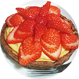
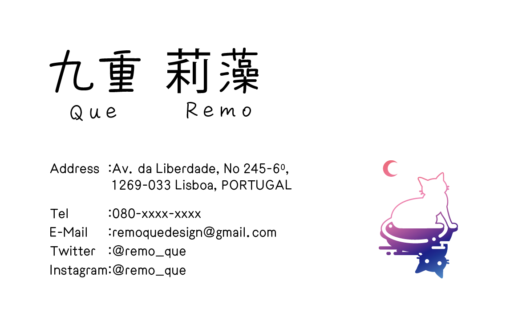

About
1996年生まれ。ポルトガル在住。
2022年より2年半勤めた会社を退職し、デザイナーとして活動開始。
趣味
お菓子作り、イラスト、
小説を書く
履歴 :
2014年4月 : 大学入学
2018年3月 : 大学卒業
2018年4月 : 大学院入学
2020年3月 : 大学院卒業
2020年4月 : 開発職として企業に就職
2022年9月 : 退職してポルトガルへ
- 

Works
-

名刺/フライヤー
名刺、招待状やフライヤーなどの印刷物に対応可能です。
illustrator, Photoshop -

イラスト/ロゴ
イメージキャラクターやロゴなどの作成に対応可能です。
illustrator, Photoshop -

ホームページ
企業HPやお店、趣味用などのホームページ作成に対応可能です。
html, css
Blog
-
webデザインの勉強を始めました
デジタルハリウッドオンラインに入学しました。がんばります！
-
引っ越ししました
ついに新居に引っ越しできました。これから部屋の環境を整えていきます。
-
退職しました
2年半のお勤めが終わりました。大変でしたが、いざこれで終わりとなると寂しいものがあります。
-
就職しました
ようやく社会人になりました。希望していた会社・職種での勤務になります。緊張します。
-
卒業しました
修士号を取得しました。研究生活もこれでおしまいです。
Contact
Av.daLiberdade, No245-6o, 1269-033 Lisboa, PORTUGAL
090-xxxx-xxxx
remoquedesign@gmail.com
090-xxxx-xxxx
remoquedesign@gmail.com